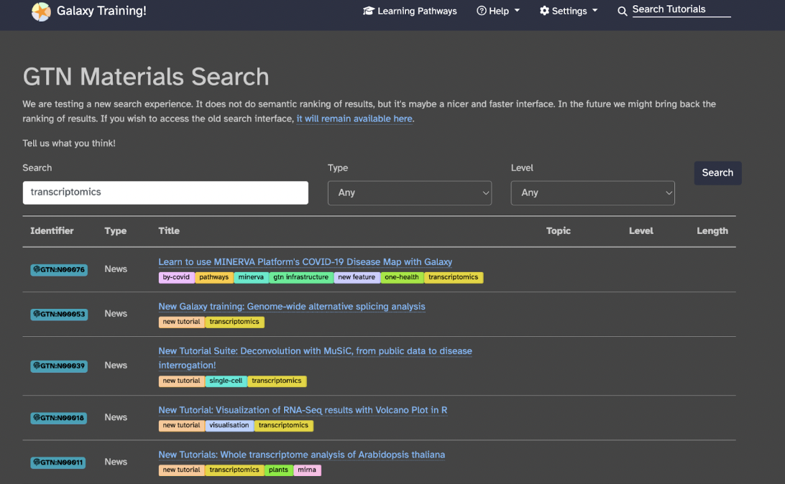
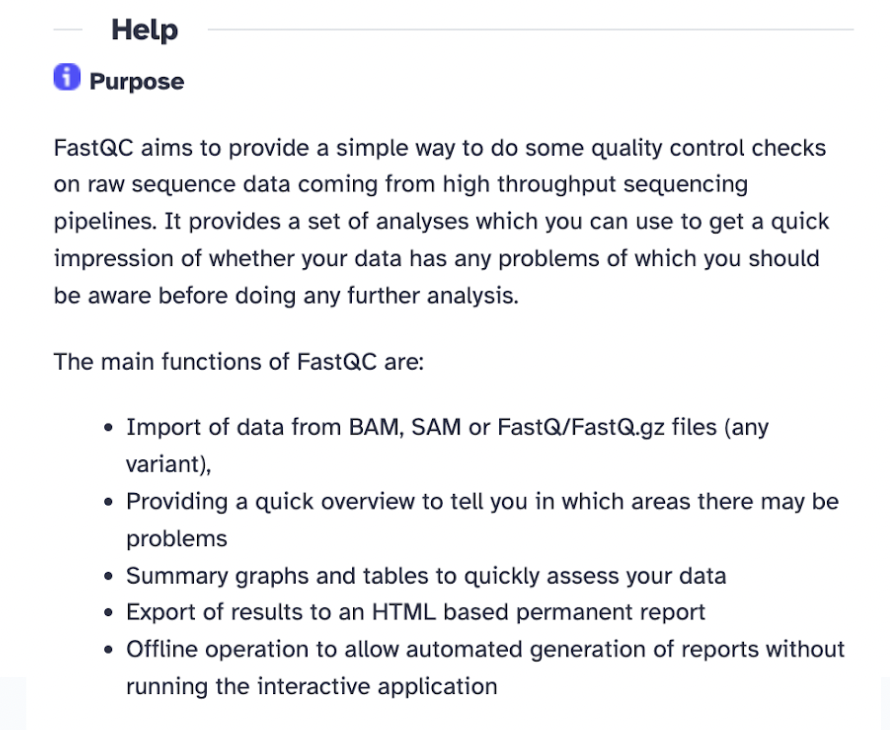
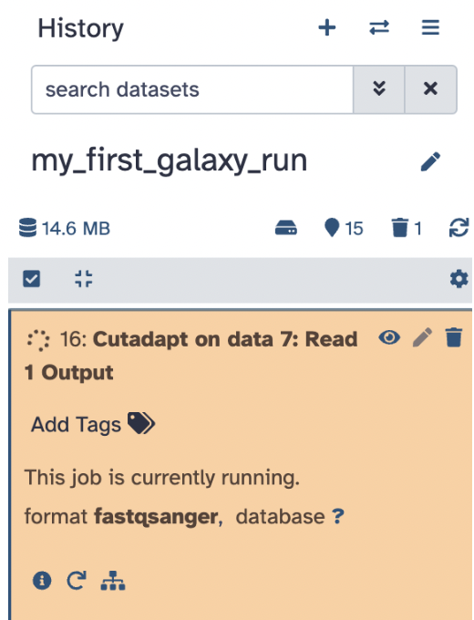

Session 33 – Galaxy: Getting Started (Part I)
33.1 Introduction to Galaxy
Galaxy is a free and open-source web platform that enables users to analyze biological data. Galaxy is designed to be a graphical user interface (GUI)-friendly, it is a web-based platform made for bioinformatics analysis. It is most known for enabling users to perform computational biology tasks without requiring programming skills.
Here are some key features of Galaxy:
1) Allows programming style analysis without command-line toolsGUI for ease of use.
2) Supports various bioinformatics applications, including biostatistics, NGS data processing, RNA-Seq analysis, and variant calling.
3) Facilitates data analysis, workflow authoring, tool integration, training and education, and infrastructure management.
4) Enables users to create and share automated workflows to generate easier scientific reproducibility.
Next, we can explore the Galaxy Architecture!
There are three panels to take note of: The left panel shows a menu where you can upload data, available tools, pre-made workflows, histories, and pages. The middle panel is the primary space where users will execute their analysis and work. The right panel is the history panel, which will track and organize your data analysis and allow users to revisit and modify workflows.
In summary, Galaxy is an excellent option for better management of in silico analysis, especially for novices in the computational sciences.
33.3 Make a Galaxy account
To use Galaxy, you must make an account. In the upper right corner of the homepage, select Login or Register > Register here. Choose an email you have access to
After registering, you will be prompted to verify your account via email.
After routine verification, you should have free access to Galaxy with 250 GB of free storage (you can always upgrade for more)
33.5 Galaxy Training
Why should we all do it? Let’s go ahead and explore Galaxy Training, which is a collection of tutorials developed and maintained by the worldwide Galaxy community.
Select Learning Pathways from the top toolbar, or visit this link, you will see sets of tutorials curated for you by community experts to form a coherent set of lessons around a topic, building up knowledge as you go.
Galaxy training designers recommend to follow the tutorials in the order they are listed in the pathway. For our bioinformatics focus, let’s focus specifically on the training designed for scientists. An example learning pathway that is suggested for all users to start with is Introduction to Galaxy and Sequence Analysis, can be found on this link.
Each learning pathway will explain to you why you would need to learn it, which modules to learn, how long each module would take, and the difficulty level. So, in the case of the Introduction to Galaxy and Sequence Analysis, you would learn: The basics of Galaxy and how to use Galaxy for analysis (Module 1 of approximately 1 hour and 40 minutes). The most common first steps of any genome analysis are quality control and mapping or assembly of your genomic sequences (Module 2 of approximately 5 hours).
You can choose from many learning pathways specifically for your project by doing the following: in the upper right corner, click Search Tutorials specific to your interest. For example, if I am studying poison dart frogs and want to determine how their genes are differentially expressed and how they differ between species and/or organs, I would type transcriptomics into the search bar.

Now, I have several resources to read through and find which one is most applicable to me. You specifically want to find the ones that say Hands-on (to learn how to process your data from scratch and possibly design your workflow), Workflow (to process your data through an already published workflow), or Slides (to learn the theoretical background about your experiment).
Galaxy training is vital for all people using bioinformatics for a few different reasons:
You will learn bioinformatics more quickly as it provides a platform to learn and practice various bioinformatics concepts and tools, with a wide variety of tutorials and resources available
You will use skills specific to your project by following specific learning pathways, modules, and tutorials
You will collect a good grasp on the ability of Galaxy and its tools to unlock its potential fully
You should review Galaxy training in your own time to determine what pathway(s) you want to take for your project.
33.6 Hands-on: Uploading, Reviewing, and Running Workflows
In this Hands-on Activity, you will learn how to create/use histories on Galaxy, upload data, and run a simple workflow, so please follow these steps:
33.7 Creating a New History
Create a new history by navigating to the History Panel on the right side of the Galaxy interface
Click on the plus sign icon and select Create New History
- Rename the history to
my_first_galaxy_runby clicking on the pencil, entering the new name, and hitting Save
33.8 FASTQ Format
A FASTQ is a text-based format used in bioinformatics to store both a biological sequence (like DNA or RNA) and its corresponding quality scores, essentially providing information about the confidence level of each base call made during sequencing, making it the standard format for raw data from high-throughput sequencing machines like Illumina platforms, the file you downloaded is a tiny file size sample of what a FASTQ file can look like. Make sure to unzip the file and open the FASTQ file via a text editor software, like Sublime or BBedit.
The basic anatomy of a FASTQ file is the following:
Each read consists of four lines:
Line 1: Sequence Identifier, which starts with @
Line 2: Raw DNA Sequence, which are the nucleotide bases (A, T, C, G)
Line 3: Separator Line, which is always just a + symbol
Line 4: Quality Scores, which are ASCII-encoded quality values
Higher ASCII values means Higher sequencing quality (less sequencing error probability)
33.9 Uploading Data
Go back to Galaxy, click on the Upload Data button (top left panel), and ensure you are in your proper history my_first_galaxy_run.
Typically, you could choose one of the following methods to upload files (as mentioned previously), but in this case, we will select the local file you just downloaded, female_oral2.fastq-4143.gz. Set the file format to FASTQ (if not auto-detected).
Click Start to begin the upload. Wait for the file to appear in the history panel (right side of the screen) and ensure it turns green (indicating successful upload).
You should now see the file in your History on the right panel
33.10 Understanding Metadata
It is vital to familiarize yourself with dataset metadata in Galaxy and learn how to modify it for clarity and proper workflow execution.
- Press the uploaded file in the history to see the immediate metadata
The immediate metadata tells us the following:
Dataset Number and Name The number 7 indicates that this is the 7th dataset in my history
female_oral2.fastq-4143is the name of your uploaded fileDataset Status (Green Background) The green color means the dataset has been successfully uploaded and processed without errors. If the dataset were still processing, it would appear in yellow. If an error had occurred, it would turn red.
Add Tags Clicking on this will allow you to assign tags to your dataset for easier identification in workflows. This is useful when juggling analyses and/or projects.
Dataset Information The 812 sequences indicates that this FASTQ file contains 812 sequencing reads, format fastqsanger confirms the detected file format is FASTQ. database with the question mark means the dataset is not yet associated with a reference genome or database
Dataset Description Field The text field says uploaded fastq file. This is a user-defined description. You can edit this by clicking inside the box and adding notes.
Action Icons Below the Description Box performs a specific function
Save icon means to Download the dataset to your local computer.
Link icon means Share or Link Information and generate a shareable link or view dataset details.
i-letter icon means Information and gives a total metadata background on the file and provides a command line view of the code written (for learning programming directly).
Bar graph icon means View Dataset Statistics to check summary statistics, file size, and sequence details.
Folder icon means Workflow Connections to view dataset relationships within workflows and analyses.
Now, on the top right of the file name, we can see the following:
The action symbols can do these actions:
Eye is a symbol that means to To view the dataset and clicking on it opens a detailed view of the dataset in Galaxy (it should be the same as what you saw when you opened it on your local computer)
Pencil is a symbol that means to Edit attributes and clicking on it edits the dataset attributes like name and info, add an annotation, or add a database/build
Trash is a symbol that means to Delete Dataset and clicking on it deletes the dataset from your history. It moves the dataset to the deleted items section (it can still be recovered if needed)
33.11 A Simple Workflow (Step-by-Step): FastQC
First, we will explore Quality Control tools using FastQC. This is a free software tool that provides quality control of high throughput sequence data. You can run this tool on its own, but Galaxy can include it as part of a workflow. We will be executing a basic bioinformatics workflow with FastQC.
Step 1) Running FastQC (Quality Control Check).
Step 2) Locate the FastQC Tool.
Step 3) In the left panel, search for FastQC under the tools section.
Step 4) Click on FastQC: Read Quality Control.

Step 5) Select Raw read data from your current history and choose the sample_reads.fastq file. Note here: Galaxy will tell you which file formats are accepted for the specified tool.
Step 6) On the selected tool, you will be able to see (with examples from the FASTQC tool):
List of various parameters you can select/deselect depending on your goal (for instance, contaminant list, adapter list, etc.) – for usual practice, keep the settings at default
Additional options (for example, email notification):
Help section to explain why the tool is used, about the tool, inputs/outputs, tutorials, and a help forum).

Step 7) Now, Click Run Tool to run the analysis.
Note that your History will add the job(s).
Wait for the job to complete (the dataset is orange during the run, green when complete, and red if there is an error).
Step 8) Analyze both FastQC Outputs
FastQC on data Webpage Click the eye icon to visualize your webpage data.
FastQC on data RawData Click the eye icon to visualize your raw data.
Step 9) Review key metrics in the Webpage file:
Per-base sequence quality Shows the quality scores of nucleotides at each position in the reads.High-quality reads have scores above 20-30 (Phred scale) A downward trend at the end of the reads suggests degradation and may require trimming.
GC content: Represents the proportion of Guanine (G) and Cytosine (C) bases. It should be uniform for a given species or sequencing run. GC bias (unexpected peaks or drops) can indicate contamination or sequencing errors.
Adapter contamination: Checks for adapter sequences left in the reads. Adapters need to be removed using Trimmomatic or Cutadapt before further analysis High levels of adapter contamination may indicate short reads or over-sequencing
Identify any potential quality issues: Low per-base quality means to consider trimming poor-quality bases, GC-content anomalies means possible contamination or sequencing bias, high adapter content means to need trimming before alignment or downstream processing.
Step 10) Next we will explore Trimming tools
A good next step after QC is trimming your data to clean it up before further analysis.
So let’s use Cutadapt to clean up our data and see if our summary metrics improve and we follow these steps:
1) Locate the Cutadapt Tool
2) Search for Cutadapt in the tools panel
3) Click on Cutadapt: Remove adapter sequences
4) In Cutadapt, select: Single-ended reads, input your original file, in Read 1 Adapter, in 3’ End Adapters, select custom sequence, and in the following box, type: CTGTCTC
In Other Read Trimming Options select Quality cutoff(s) (R1): 22, and in Read Filtering Option,s select Minimum length (R1): 15
5) Hit the Run Tool and let the file run, and wait for the file to turn green

6) Now, use this output file to see if the FASTQC report changed by plugging this file into the FASTQC tool and hitting Run Tool
7) Let’s hit the eye icon on our data file of the FASTQC web page and observe
Based on the previous original data, our summary for FASTQC is better as we now do not have the adapter, and the base quality is better and improved.
33.12 Running a Workflow Automatically
Finally, we will run a simple workflow in a single instance. As you can imagine, bioinformaticians deal with a lot of data simultaneously. Wouldn’t it be nice to automate our pipelines and have data processed in bulk? That’s where workflows come in, and we can utilize our tools from Galaxy in an automated fashion! Quality control and trimming sequences are also typical tasks a bioinformatician would take in cleaning their data before further analysis. So, let’s design a simple FASTQC + Cutadapt pipeline, by following these steps:
Step 1) Navigate to Workflows and click the Create button
Step 2) Label it my_first_galaxy_workflow
Step 3) Select the tools you used from the previous analyses (FASTQC and Cutadapt) with all the same parameters and input them into your new Galaxy workflow
Step 4) Click the save icon at the top next to your title, and now you have your first workflow!
Step 5) Click Run and now you can run your very own workflow without the need to search for any tools; you can also modify it to run the steps, too
Step 6) Click Run Workflow to see your jobs getting done simultaneously and result in the same as your previous steps
You can repeat your workflow as often as needed to perfect your analyses
Congratulations, you finished the first session of Galaxy Learning! In the next session, we will explore building a specific project.